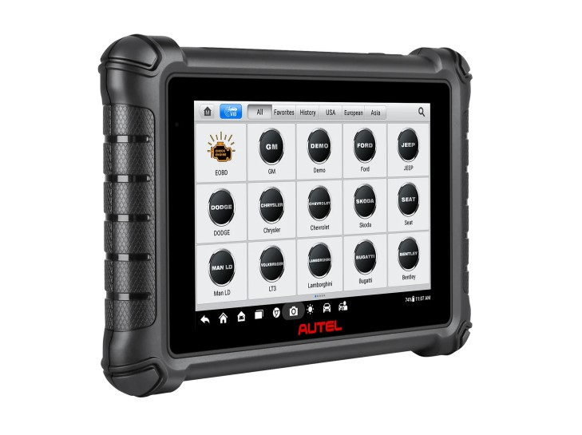
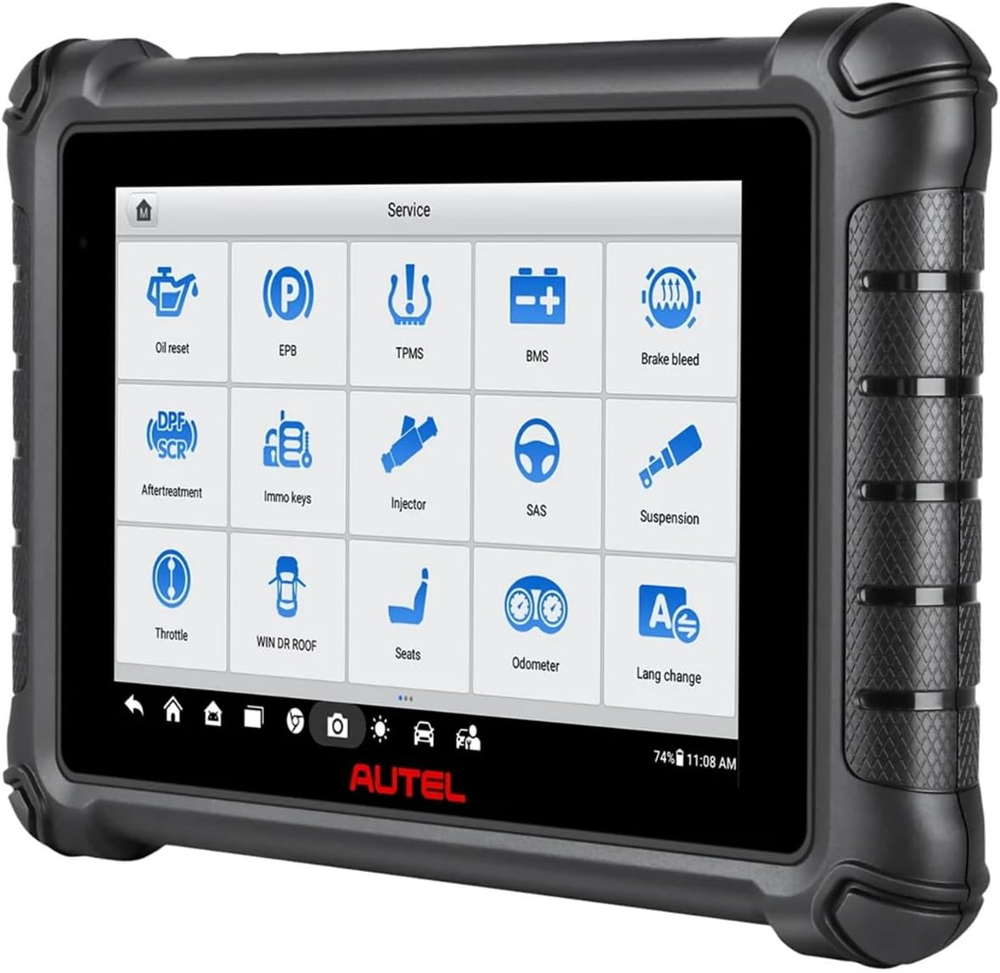
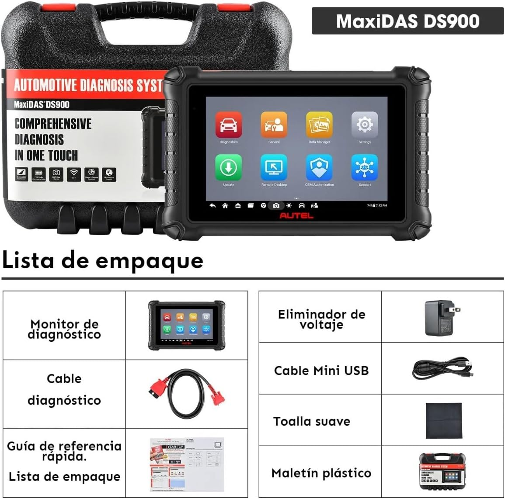
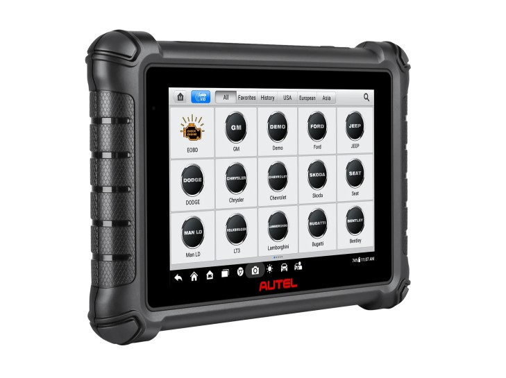
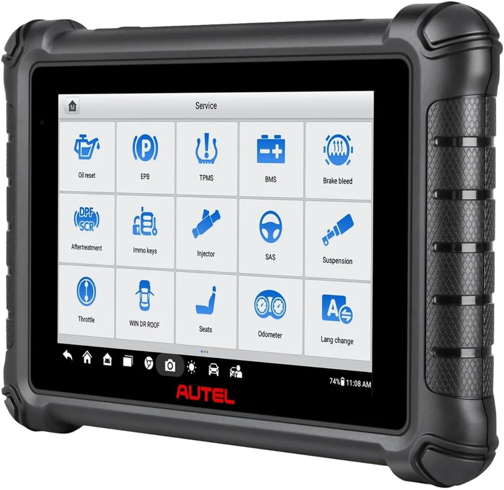
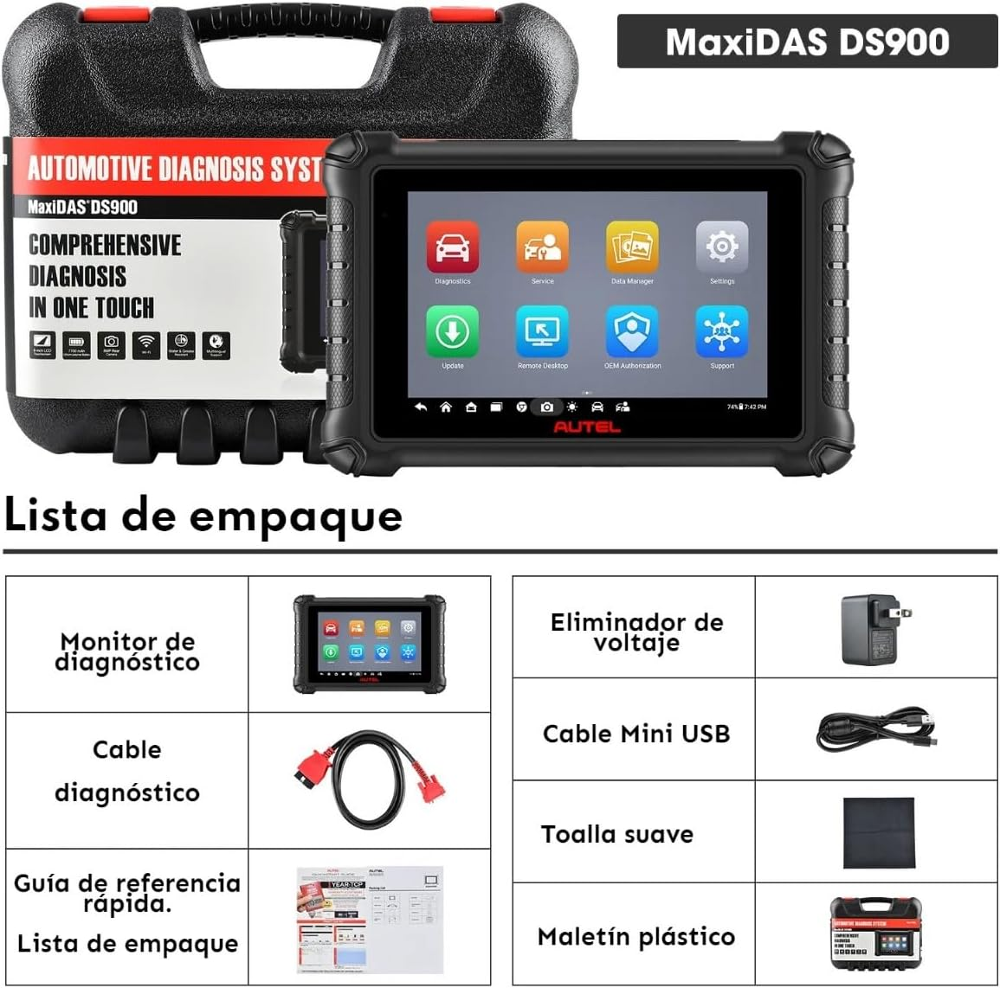

Autel MaxiDas DS900



Equipo de diagnóstico profesional
- Cobertura
- Funciones
- Especificaciones técnicas
- Accesorios
1 año de garantía
En español
Actualizaciones vía Wifi
Cobertura
El equipo se conecta al vehículo a través del cable OBD II (incluído)
- Vehículos del mercosur, americanos, asiáticos y europeos.
- Sistema de nivel OE para todos los sistemas electrónicos.
- Protocolos soportados: ISO9141-2, ISO14230-2, ISO15765, K/L-Line, Flashing Code, SAE-J1850 VPW, SAE-J1850PWM, ISO11898(alta, media y baja velocidad and Single-wire CAN, fault-tolerant CAN) , SAE J2610, GM UART, UART Echo Byte Protocol, Honda Diag-H Protocol, TP2.0, TP1.6, DoIP, CANFD
Funciones
- Lectura y borrado de avería de todos los sistemas.
- Lectura de datos en tiempo real.
- Tecnología AutoVIN para la rápida identificación del vehículo.
- Regeneración forzada de DPF y ajuste de inyectores.
- Resetea sensor Ángulo de Giro (SAS).
- Reseteo de intervalo de servicio.
- Adaptación de cuerpo mariposa.
- Verificación del filtro de partículas (DPF y SRC).
- Reaprende mordazas de EPB (freno electrónico) tras su sutitución.
- Restablece el kilometraje y los intervalos de servicio.
- Reaprendizaje de sensores TPMS.
- Registros y reinicios de batería (BMS).
- Purgado de frenos.
- Codificación de inyectores.
- Adaptación de puertas y ventanas.
- Admite el registro y reinicio de la batería.
- Reseteo de airbag.
- Test de actuadores.
- Control bi-direccional / test activos: radiador, actuador de cerradura de puertas, freno de mano, luces, bocina, bomba de combustible, sensores para medir la velocidad, válvula de freno, etc.
- Adaptaciones.
- Funciones especiales.

Las funciones varían por marca y modelo
Los reportes se pueden almacenar en el dispositivo y/o imprimir.
Consultá el manual de usuario acá
Consultá la cobertura por marca y modelo acá
Especificaciones técnicas
Sistema operativo: Android 11
Conexión: USB-C, USB 2.0, Wi-Fi, Mini SD (hasta 64 GB)
Pantalla: 8 pulgadas, táctil y de alta resolución.
64GB memoria interna / 4 RAM
Actualizaciones vía Wifi
Soporte técnico de manera remota.
Cámara de 8 MP
Accesorios
- Cable OBD II
- Cable USB-C
- Valija de transporte
- Manual de usuario


- Cobertura
- Funciones
- Especificaciones técnicas
- Accesorios
Equipo de diagnóstico profesional
1 año de garantía
En español
Actualizaciones vía Wifi
Cobertura
El equipo se conecta al vehículo a través del cable OBD II (incluído)
- Vehículos del mercosur, americanos, asiáticos y europeos.
- Sistema de nivel OE para todos los sistemas electrónicos.
- Protocolos soportados: ISO9141-2, ISO14230-2, ISO15765, K/L-Line, Flashing Code, SAE-J1850 VPW, SAE-J1850PWM, ISO11898(alta, media y baja velocidad and Single-wire CAN, fault-tolerant CAN) , SAE J2610, GM UART, UART Echo Byte Protocol, Honda Diag-H Protocol, TP2.0, TP1.6, DoIP, CANFD
Funciones
- Lectura y borrado de avería de todos los sistemas.
- Lectura de datos en tiempo real.
- Tecnología AutoVIN para la rápida identificación del vehículo.
- Regeneración forzada de DPF y ajuste de inyectores.
- Resetea sensor Ángulo de Giro (SAS).
- Reseteo de intervalo de servicio.
- Adaptación de cuerpo mariposa.
- Verificación del filtro de partículas (DPF y SRC).
- Reaprende mordazas de EPB (freno electrónico) tras su sutitución.
- Restablece el kilometraje y los intervalos de servicio.
- Reaprendizaje de sensores TPMS.
- Registros y reinicios de batería (BMS).
- Purgado de frenos.
- Codificación de inyectores.
- Adaptación de puertas y ventanas.
- Admite el registro y reinicio de la batería.
- Reseteo de airbag.
- Test de actuadores.
- Control bi-direccional / test activos: radiador, actuador de cerradura de puertas, freno de mano, luces, bocina, bomba de combustible, sensores para medir la velocidad, válvula de freno, etc.
- Adaptaciones.
- Funciones especiales.

Las funciones varían por marca y modelo
Los reportes se pueden almacenar en el dispositivo y/o imprimir.
Consultá el manual de usuario acá
Consultá la cobertura por marca y modelo acá
Especificaciones técnicas
| Sistema operativo: Android 11 |
| Conexión: USB-C, USB 2.0, Wi-Fi, Mini SD (hasta 64 GB) |
| Pantalla: 8 pulgadas, táctil y de alta resolución. |
| 64GB memoria interna / 4 RAM |
| Actualizaciones vía Wifi |
| Soporte técnico de manera remota. |
| Cámara de 8 MP |
Accesorios
- Cable OBD II
- Cable USB-C
- Valija de transporte
- Manual de usuario
